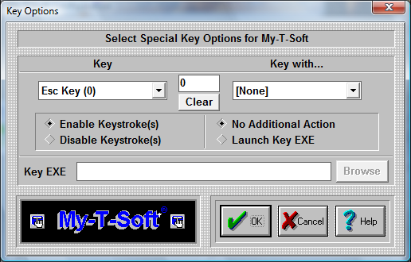

| My-T-Soft®: for Windows; Indestructible Keyboards and Indispensable Utilities; Version 1.80; User's Guide | ||
|---|---|---|
| Prev | Next | |

Key Options offers customization capabilities for keys on the main Alpha Keyboard Panel and the Edit panel. Keys may be disabled, assigned to other functions, and can be re-mapped using the Launch Key EXE in conjunction with the Developer's Kit (e.g. the Esc key could be re-mapped to send Alt-F4).
Select Key
This Drop-Down list allows you to select the specific key you wish to work with. The number in parentheses is the internal ID used by My-T-Soft for the key's position. Refer to the Build-A-Macro Notes for more details on these internal IDs.
Select Key Modifier (Key with...)
This Drop-Down list allows you to select a specific key combination (i.e. Ctrl-Alt-Delete) for the currently selected Key. All combination options are available. Note that with the proper setting, you can disable Ctrl-F1, but not F1, or just disable Alt-F4, or Shift-Esc. Due to the complexity of available applications, each possible option for each key is given. See the Key Display (below) which is a quick visual aid to see if a particular key has any enhanced settings.
Key Display
This is a visual aid only. When it is 0 (zero), there are no enhanced key settings in use. All keys are Enabled, and there is no Launch setting on. Any non-zero display means that at least one enhanced key setting is selected for the currently selected Key.
Clear
This button will remove all enhanced settings for the currently selected key. All keystrokes will be Enabled, and any Launch settings will be removed (No Additional Action will be selected to every possible keystroke). This will not remove the Key EXE entry, but this is disabled since all Launch settings will be cleared.
Enable Keystroke(s) / Disable Keystroke(s)
This defines the state of the particular key and its current modifier (Ctrl, Shift, Alt). If Enabled, then My-T-Soft will generate & send the keystroke. If Disabled, then the keystroke(s) will be removed and no action by My-T-Soft will occur when the particular keystroke(s) is/are initiated by the user. Note that this action is independent of the Launch Key EXE capability.
No Additional Action / Launch Key EXE
In general, the No Additional Action for any keystroke is the typical setting. Due to customer requests, we have added the capability of also initiating other actions tied to specific Keystrokes. By using the My-T-Soft Developers Kit, these (or any other developer selected action) can be tied to a particular keystroke or combination. Some of these requested capabilities are:
- Minimize to button upon Enter (type Enter, then minimize = Enter Key Enabled, Launch MINMZMTS.EXE)
- Ctrl-Alt-Delete restarts system (Ctrl-Alt-Delete Launches NTRSTART.EXE)
- Alt-F4 cannot close window (Alt-F4 Disabled)
- Make F1 run special Application Help program tied to a different key (F1 Key Disabled, Launch SDSTRMTS.EXE with appropriate alternate keystroke used)
This adds a great deal of flexibility to the general keyboard (similar to the capabilities of the Macro panels), but it also creates a greater chance of confusion. These should only be used when implementing a system for only 1 type of use. In general, these settings are potentially more dangerous then helpful. Wondering why the keyboard disappears everytime you press Enter is certainly not the end goal of productivity - so please be extremely careful when using these options, and document any changes for developers to come and for your users!
Key EXE
This is an Executable file that will be run if the "Launch key EXE" option is selected for the particular Key Combination. Note you may add command line options, but be sure to click on OK when you are through editing the selection.
Browse
This button will open a File Open Browse Dialog that will let you explore your system to select an executable. Because of backward compatibility, only short path & file names are used.
It is strongly recommended that only Developer Kit EXEs be used.